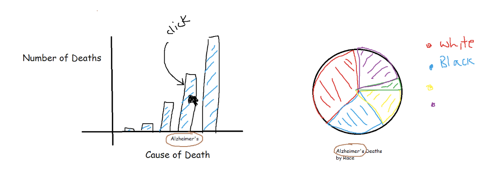
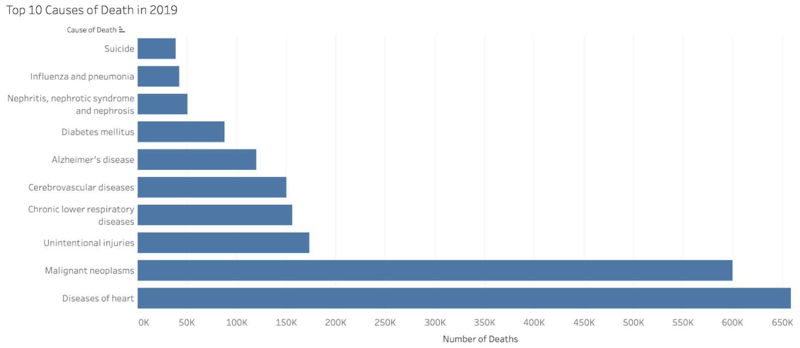
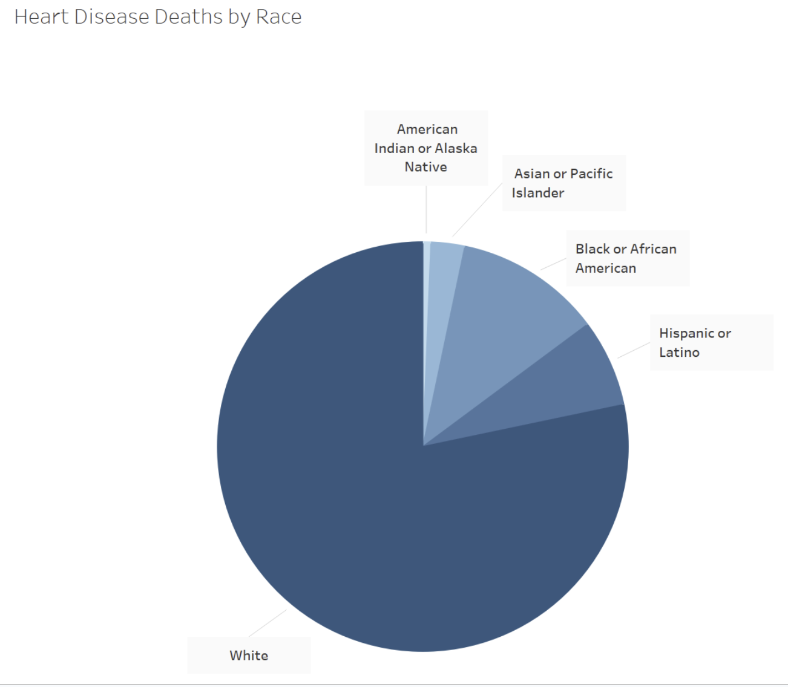
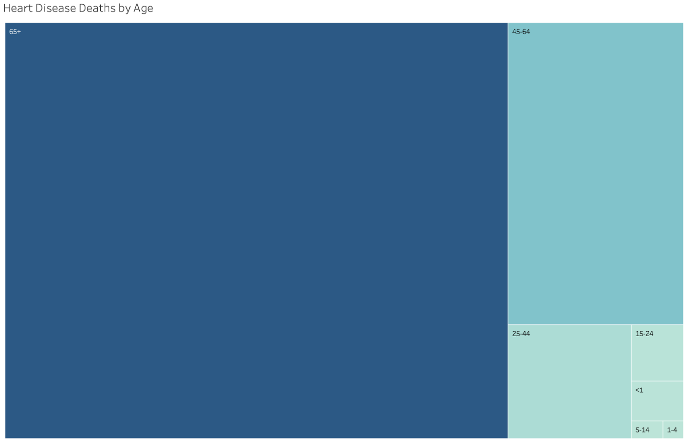

Sarah Kaplan, Areen Khalaila, Mahmoud Salah, Paras Pandey
Project-long Course Project as part of COSI 116A: Information Visualization, taught by Prof. Dylan Cashman, Brandeis University.
Our goal is to explore why people die in the US, and how different populations are affected differently by those causes of death. Looking at these charts will allow the user a better understanding of American causes of death and how those causes of death proportionately affect certain populations.
Include the interactive visualization as part of this page. Static example follows.
Final visualization screenshots (PNG images), design justifications, UI walk-through, and linked presentation slides.
The data that we used was numbers of deaths from the top 10 causes of death in each age group and in each race. These were initially in Excel sheets, then we converted them into json files so that we could use them easily in our visualizations. All of the data can be found in the data folder of this project on GitHub!
On our task table, our tasks were to:
We didn't get to every single one of our tasks, but our top two are here!
We started off by sketching some ideas of what we could do for the project. Then, we adapted our initial sketches into our final sketches and our final sketches into our final visualization on this website. As we progressed through each stage, we tried to balance what was realistic to create and what was interesting for the user to learn about. We especially focused on our use of color, as we discussed in class, and how understandable the content was. These are our initial sketches:  These are our final sketches:   
Our final result is a bar graph that displays the top 10 causes of death in the US, which, when a cause is clicked on, creates a pie chart breaking down the races of those deaths and a tree map breaking down the ages of those deaths. This visualization explores what causes deaths and how these causes affect different populations differently. In the future, one area of improvement could be attempting to be more creative with our project; because of the quick turnaround time, we were hustling to get everything done, but with more time, we could definitely create a more original project. We also could create more visualizations to display more facets of this data, such as location-related queries.
List here where any code, packages/libraries, text, images, designs, etc. that you leverage come from.
We used these sources to help with our project: